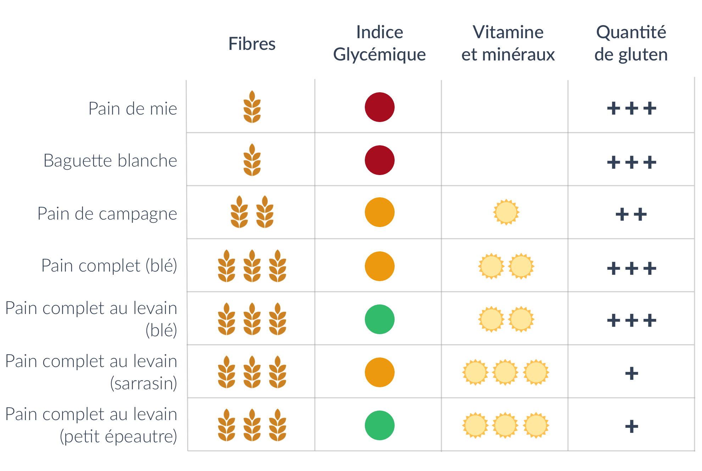

Ah, la France et le pain, une grande histoire d’amour ! Les Français consomment en moyenne 120g par jour soit…44 kgs par an ! Avec une quantité aussi importante, il est donc nécessaire de se poser la question de l’impact du pain sur notre santé afin de choisir le bon type de pain. Avec l’aide du nutritionniste Anthony Berthou, on vous a listé les principaux éléments à regarder pour bien choisir son pain.
Pain blanc ou pain complet ?
Le pain complet est bien plus riche en fibres que le pain blanc. En effet, la farine utilisée pour le pain complet est faite à partir des grains entiers qui conservent leur enveloppe (le son). Or, l’enveloppe est la partie du grain qui contient le plus de fibres. On compte ainsi dans le pain complet environ 2 fois plus de fibres que dans le pain blanc. Or, notre consommation de fibres est souvent insuffisante. Pourtant, les fibres jouent un rôle essentiel afin de réguler notre glycémie (voir notre article sur les glucides), d’éliminer certains éléments toxiques que nous ingérons comme les pesticides et de renforcer notre système immunitaire.
Le pain complet est aussi plus riche en vitamine B et en minéraux (fer, manganèse, magnésium, zinc, sélénium…). Ils sont en effet contenus dans l’enveloppe du grain mais aussi dans le germe qui est détruit lors du processus de raffinage.
Attention cependant : le pain complet est à choisir impérativement bio car l’enveloppe de la graine est la partie qui contient le plus de pesticides.

Le pain blanc, et notamment la baguette, peut par ailleurs contenir de nombreux additifs qui ont pour objectif d’accélérer la fabrication et d’améliorer la conservation. Pour les inconditionnels de la baguette, préférez la baguette tradition car son appellation exige qu’elle ne renferme aucun additif et oblige ainsi les boulangers à utiliser des farines de meilleure qualité pour sa fabrication.
Petit bémol cependant concernant le pain complet : il contient des composés (les phytates notamment) qui limitent l’absorption du calcium et du zinc.
Encore plus riche en fibres et en minéraux que le pain complet, on trouve aussi le pain intégral. Le pain intégral est réalisé avec une farine qui n’a reçu aucun raffinage et qui conserve ainsi l’intégralité des composants de la céréale (la farine utilisée pour le pain complet a quant à elle été légèrement raffinée).
À base de quelle farine ?
Le gluten est ce qui permet l’élasticité d’une pâte. Le problème du gluten réside dans le fait que nos variétés modernes de blé ont subi de nombreux croisements génétiques afin d’augmenter la concentration en gluten du blé et rendre ainsi la pâte plus élastique pour avoir de meilleurs rendements. Notre organisme se retrouve donc à devoir assimiler une quantité beaucoup plus abondante de gluten qu’avant. Or, le gluten contribue à augmenter la perméabilité intestinale : la muqueuse intestinale devient plus perméable et laisse passer des fragments qui n’auraient normalement pas dû passer (voir notre article sur le gluten).
Cela peut alors entraîner des réactions immunitaires et inflammatoires et contribuer aux risques d’apparition de troubles fonctionnels et d’hypersensibilités alimentaires (inconforts digestifs, inflammations intestinales, migraines), voire augmenter le risque de déclenchement d’infections à répétition, de pathologies inflammatoires chroniques ou auto-immunes en cas de prédisposition génétique (eczéma, asthme, sclérose en plaques, polyarthrite rhumatoïde, maladie de Crohn, otites et bronchites à répétition, etc.).
La farine de blé est très riche en gluten, il est donc intéressant de varier les types de farine pour des variétés moins riches en gluten. Une alternative très intéressante est la farine de petit épeautre, qui contient très peu de gluten. L’épeautre est un blé rustique qui a subi peu de transformations. Il est riche en acides gras mono et poly-insaturés, en minéraux et en vitamines (E et B). Par ailleurs, ses protéines contiennent les huit acides aminés essentiels dont le corps a besoin, ce qui est rare pour une céréale. La farine d’épeautre, différente de celle de petit épeautre, est plus riche en gluten et donc un peu moins digeste.
La farine de sarrasin est aussi une alternative intéressante : elle est riche en fibres, en protéines et en antioxydants. Le sarrasin a par ailleurs un effet probiotique : il stimule la flore intestinale et aide ainsi à renforcer le système immunitaire. Seul inconvénient de la farine de sarrasin, elle a un indice glycémique plus élevé. Enfin, vous pouvez aussi opter pour de la farine de seigle. Pauvre en gluten, le seigle est riche en fibres et en antioxydants.
Les farines de quinoa, riz, maïs ou encore châtaigne sont également des alternatives contenant peu ou pas de gluten, mais dont l’intérêt nutritionnel est limité. Le riz est par ailleurs connu pour sa capacité à absorber fortement les substances toxiques (en particulier l’arsenic) et à accumuler les métaux lourds : il est donc fortement recommandé de choisir un pain bio s’il est à base de farine de riz. Les farines de châtaigne et de riz ont par ailleurs un indice glycémique élevé.
Un autre élément à prendre en considération pour la farine est la finesse de raffinage, notamment si vous faites votre pain maison. Elle est indiquée avec la lettre T suivie d’un chiffre. Plus le chiffre est élevé, moins la farine est raffinée. Chaque farine a son propre système de code. Pour la farine de blé, les codes sont les suivants :

Pain à la levure ou au levain ?
La différence entre la levure de boulanger (à ne pas confondre avec la levure chimique utilisée pour faire lever les gâteaux) et le levain réside dans les ferments utilisés.
La levure de boulanger est en réalité un champignon microscopique présenté sous forme sèche ou fraîche, et qui est aussi utilisé pour faire de la bière et du vin. Cette levure permet de produire une fermentation alcoolique rapide, et donc de réduire le temps de fermentation nécessaire pour faire lever la pâte à pain.
À la différence de la levure, le levain provient uniquement des substances présentes naturellement dans la composition du pain. En effet, le levain résulte de la fermentation provoquée par les bactéries présentes sur l’enveloppe du grain de blé. Il va produire une fermentation lactique, beaucoup plus lente que la fermentation alcoolique, ce qui explique sa plus faible utilisation par les boulangeries.
Le pain au levain présente un 1er avantage : il est plus digeste. En effet, les bactéries lactiques formées au cours de la fermentation vont initier le travail d’acidification et donc de digestion. La fermentation va aussi contribuer à dégrader en partie le gluten, qui peut poser des problèmes de digestion. Il est particulièrement conseillé de choisir du pain au levain pour les pains complets qui peuvent être plus difficiles à digérer.
Par ailleurs, l‚Äôindice glyc√©mique du pain au levain est plus faible que celui du pain √† la levure (voir notre article sur les glucides et l’indice glyc√©mique). Il est d‚Äôenviron 65 contre plus de 80 pour celui √† la levure. Le pain au levain va donc permettre une diffusion plus lente des glucides, et donc limiter les fringales et le stockage des glucides sous forme de graisses.
Enfin, le pain au levain présente aussi un apport plus élevé en vitamines et minéraux. En effet, les vitamines et minéraux du pain sont enfermés dans une molécule appelée l’acide phytique. Cet acide reste intact au cours de la digestion et empêche les vitamines et minéraux de franchir la barrière intestinale pour passer dans notre organisme : ils ne sont donc pas ou peu assimilés. Dans le cas du pain au levain, les bactéries lactiques produites au cours de la fermentation vont permettre de neutraliser l’acide phytique, qui va alors libérer les vitamines et minéraux afin qu’ils soient assimilés par l’organisme.
Tour d’horizon des pains

- CIQAL – https://ciqual.anses.fr/#/aliments/7110/pain-complet-ou-integral-(a-la-farine-t150)
- Fasano. 2011 « Zonulin and Its Regulation of Intestinal Barrier Function: The Biological Door to Inflammation, Autoimmunity, and Cancer ». Physiological Reviews 151-175.
- Hollon et al. 2015. “Effect of gliadin on permeability of intestinal biopsy explants from celiac disease patients and patients with non-celiac gluten sensitivity”. Nutrients 7(3):1565-1577.
- Korem T, Zeevi D, Zmora N, Weissbrod O, Bar N, Lotan-Pompan M, Avnit-Sagi T, Kosower N, Malka G, Rein M, Suez J, Goldberg BZ, Weinberger A, Levy AA, Elinav E, Segal E. Bread Affects Clinical Parameters and Induces Gut Microbiome-Associated Personal Glycemic Responses. Cell Metab. 2017 Jun 6;25(6):1243-1253.e5. doi:10.1016/j.cmet.2017.05.002. PubMed PMID: 28591632.

Merci
Et les pain GAIA ?
Merci Mr Berthou pour cet article tr√®s clair et tr√®s complet. Je vais m’en inspirer pour mes √©l√®ves.
Bien cordialement
Excellent article, très clair et bien détaillé.
BRAVO et MERCI √† toute l’√©quipe….continuez :-)))
Je profite de l’occasion pour dire que j’adoooore la fa√ßon dont votre appli d√©range les professionnels de l’alimentation…. Vous serez beaucoup imit√©s, et l’√™tes d√©j√† d’ailleurs, mais jamais √©gal√©s, vous serez ¬´¬†tacl√©s¬†¬ª aussi…mais nous serons avec vous…..
Analyse intéressante qui fait la synthèse de ce que nous savons déjà plus ou moins.
Un seul oubli, majeur, c’est la quantit√© de sel contenu dans le pain.
Autour de 2.00 g pour 100 g, minimum 1.80 g.
Beaucoup trop pour notre sant√© et totalement inutile sur le plan organoleptique. Manger du pain sans sel serait juste une question d’apprentissage du go√ªt.
Le sel est toxique pour notre sant√© et en moyenne d’apr√®s l’article nous mangeons 120 g de pain donc environ 2 g de sel pour une ration journali√®re optimale, pour les bien portants, de 5 √† 6 g, soit 1/3 de celle-ci. Imaginez que vous mangez du pain avec du beurre sal√© pour accompagner un Roquefort… Avec 0.5 g √† 3.0 g de sel pour 100 g dans le beurre et 4 dans le roquefort, vous avez atteint votre dose journali√®re !
LE SEL EST ABSOLUMENT INDISPENSABLE √† L’ORGANISME
Bonjour. Merci pour votre article. Mais savez-vous comment l’on peut faire son levain soi-m√™me car, c’est impossible √† trouver. Merci. Marie
Bonjour, sur le site de nicrunicuit.com il y a de nombreuses explications pour faire le levain soi-même
Très intéressant Merci
Bonjour,
Pourrait on obtenir que les blés utilisés pour la fabrication du pain retrouvent les niveaux de gluten des années 50?
A+ AJG
Bravo et merci pour cet article tres intéressant
petits rappels toujours int√©ressants, j’ignorais toutefois la diff√©rence entre pain complet et pain int√©gral – merci !!
Tr√®s bon article faisant une synth√®se des avantages et inconv√©nients des diff√©rents pains. Tr√®s utile lorsque l’on se trouve dans une boulangerie offrant de nombreux choix. En g√©n√©ral je me procure du pain int√©gral que j’ai d√©couvert en lisant le livre de Montignac il y a 20 ans. Sur le site Montignac, ils decrivent la composition de leur pain integral,.Quand je n’en ait pas car il faut l’acheter dans une boutique bio je prend de la baguette tradition. Merci pour votre article que je diffuserait autour de moi
Le meilleur article que j’ai lu de cet cat√©gorie tant par la richesse des explications que par sa clart√©. Merci
Bonjour,
Encore un article très intéressant. Avez vous des recette de pain complet au levain.
Merci.
Merci pour ces informations tres interessantes.
intéressant ! Merci
Article vraiment très intéressant. Pour aller plus loin concernant le gluten et le lait de vache je vous conseille le livre de Jean-Marie Magnien : Réduire au silence 100 maladies Avec le régime Seignalet. SURPRENANT
tres interressant article sur le pain merci
Toujours un plaisir de lire les articles. Bien expliqué et illustré. Vivement le prochain.
J’adore les conseils que vous donnez .Mon mari est diab√©tique et je trouve toujours des id√©es de cuisine et de conseil pour faire mes courses. Tout est scrupuleusement flash√©
Bonsoir, merci pour votre article. Je fais mon pain, depuis plusieurs ann√©es avec les farines BIO T110 bl√©, T110 seigle m√©lang√©es √† T65 √©peautre et T65 bl√© , et avec du levain bio sec, j’ajoute aussi quelques graines BIO de lin, s√©same, chia.
Bonjour
Quel pain pour un diabétique
Bien cordialement
JjD
J’ach√®te du pain int√©gral en magasin bio, cela convient mieux √† mon mari,.
Je fais le pain manuellement et j’emploie de la T80 bio + 10 pour cent de son d’avoine . Je vais m’interresser au levain.bravo pour votre article.
Excellent article !Merci!
Merci pour votre article, je fais mon pain et votre texte m’ a donné de très bonnes informations
excellent et tres utile article , merci
Bel article sur les différentes farines et variétés de pain.
Le sarrasin étant sans gluten comment est fait ce pain ?
Merci, toujours la bienvenue !
Merci pour cet article clair et précis.Vous ne parlez pas du pain au Kamut (bio ) ? Est- Il intéressant ?
merci information complete
Très instructif ! Merci ☺
Bonjour
Comme Lylou je suis intolérante au blé.
Lequel est le plus approprié ?
Excellent votre article , explications et analyse très claires .
Merci
Toujours aussi int√©ressant et plein d’enseignement !
Merco
Article excellent
Merci
Conclusion : ne mangez pas de pain, ou rarement, cela vous √©vite le casse t√™te de quel pain choisir, et c’est excellent pour le r√©gime.
Excellent article sur les propriétés du pain.
Merci,
De la part d’une intol√©rante au gluten
et le ain de seigle ??? je suis intolérante à la farine de blé.
Super article, clairement expliqu√©, et tableau synth√©tique √† la fin, merci beaucoup ! üôÇ
Très intéressant mais il ne faut pas oublier de dire que moins la farine est raffinée (donc T110 ou 150), plus les intestins des personnes qui ont déjà une hypersensibilité aux fibres, sont « martyrisés ». A consommer en petites quantités et à ne pas associer à des légumes ( crus et cuits) ou légumineuses riches en fibres eux aussi!
Et le lin ? Convaincus par votre article. Merci
bonjour, encore un super dossier avec de très bonne infos .merci pour toutes ces infos utiles et pour tout votre formidable travail derrière tout ça….
Je trouve que vous abusez √† pr√©tendre que le gluten pourrait d√©clencher une maladie auto-immune comme la scl√©rose en plaques Pas de preuves √©videmment …
Article très intéressant. Mais comment fait-on du levain au petit épeautre? Est-ce que cela lève vraiment? Merci.
merci pour toutes ces info
je comprends mieux
et revois au fur et à mesure mes habitudes alimentaires grâce à Blomy
Merci de ces informations que l’on ne trouve nulle part ailleurs
Pour les personnes diabétiques il vaut donc mieux déguster du pain au levain
Encore faut il en trouver en boulangerie…..
pain maîs quinoa intestin fragile peut on les conso,,er du fait de la presence de grains
Super intéressant mais il est difficile de trouver des boulangeries qui vendent du pain complet (sans parler du pain intégral).
Le pain avec de la farine compl√®te, mais en √©tant compl√®te, la graine renferme plus de r√©sidus de pesticides. Donc, si elle n’est pas bio, est-ce une bonne id√©e de consommer de la farine compl√®te ?
BONJOUR,
mais vous ne parler des autres pains,comme pain au mais,cereales ,ou nordique
car c’est ce que je mange ;merci
Merci , pour les détails très instructifs.A bientôt pour vous lire
Et le pain dit »nordique » qui est noir et enrobé de graines diverses.il est proposé dans certaines stations thermales traitant de l obésité.
Merci
Merci pour ce dossier , tres tres interressant .
Enfin , une explication sur le gluten ….
Félicitations pour les détails de vos thèmes. dossiers très complets et très instructifs.
continuez ‚Ķ…
Encore une fois félicitation pour votre article sur le pain :très bien documenté et efficace .Continuez comme cela .Bravo .Beau travail .
Excellent je prends note merci
Merci pour votre article tr√®s instructif sur le pain . Je vous f√©licite √©galement pour votre excellente appli que j’utilise r√©guli√®rement maintenant pour choisir mes aliments et produits cosm√©tiques .Bravo , Continuez !
Très instructif, format parfait. J’adore vos articles merci !
bonjour ; bravo pour vos recherches et merci pour l’info. Cordialement
Bon article merci
Article utile, intéressant et bien documenté comme toujours. Continuez
Pourquoi écrire 120g et 44 kgs ? que vient faire ce « s » dans une abréviation ?
J’habite √† 40ms de ma boulangerie, et je mets 15ss pour y aller !
Merci très instructif
bon article, intéressant.
merci pour les informations car c’est toujours un casse t√™te de trouver un bon pain avec toutes les vari√©t√©s propos√©es maintenant
Je prend le matin soir du pain au levain ou des galettes de riz bio es bon
tres lisible super
Merci pour cette information complète sur le pain .
Merci pour cet article complet juste une remarque : j’avais lu ailleurs que le seigle est déconseillé car il contenait les protéines formant le gluten ?
Merci pour toutes ces explications. Il n’est cependant pas toujours simple de se procurer du pain bio au quotidien.
Article très instructif
Bonjour,
Ce dossier sur le pain est tr√®s int√©ressant (merci beaucoup) il serait int√©ressant de rajouter le mauvais traitement que subisse tous les pains en terme d’hygi√®ne. En effet tr√®s rare sont les boulangerie qui prennent des gants pour manipuler les pains m√™me les p√¢tisseries. (Bien venue √† tous les microbes et autres virus).
Merci pour la qualité de votre application et de vos articles.
Bien cordialement
Merci beaucoup blomy j appris plein de choses üòÄüòÄüòÄüòÄüòÄüòÄ
bonjour
votre article est tres clair ,pr√©cis ,complet.J’ai bien saisi les nuances et les diff√©rences.
Merci
Bravo l’√©quipe Blomy. j’apprend toujours une nouvelle information avec vous.
Vous êtes au top
Merci
Vous n’avez rien dit sur le pain aux c√©r√©ales. Je consomme des baguettes aux c√©r√©ales (baguette chia ou reine). Es ce bon pour la sant√©. Merci
Adepte de faire mon propre levain au seigle et mon pain au petit √©peautre, pour ceux qui voudrait se lancer, √©viter au d√©but utiliser les farine de sarrasin et de seigle pour la composition m√™me du pain, c’est beaucoup plus difficile √† fa√ßonner lorsque l’on a pas d’exp√©rience que le petit √©peautre.
En tout cas depuis 1 ans , que je fais mon propre levain et pain , non seulement j’ai perdu 2 kilos mais j’ai beaucoup moins de fringale et de lourdeur qu’avec le pain du commerce.
Encouragerait tout le monde a essay√©, au d√©but effectivement √ßa ressemble pas √† grand-chose, mais au bout d’une dizaine de pain vous verrez c’est g√©nial :=)
Merci Jo pour ce t√©moignage ! je fais mon pain √† la MAP 1/3 farine de seigle et 2/3 bl√© T150 avec de la levure = comment fait-on son propre levain ? ou bien, où s’ach√®te-t-il ?
Article très « nourrissant » je vais suivre vos institutions ( je ne mange que du bio mais en pain pas toujours !
Article très instructif mais où trouver du pain complet au levain petit épeautre ? (Je suis ds les hauts de Seine)
Merci
Suite à cet article très intéressant et constructif je vais rectifier mon alimentation sur le pain, grand merci à vous
Bravo pour c’est article pr√©cis en concis , je les diffuse largement autour de moi et cela sensibilise mes amis qui sont en train de modifier leur alimentation. Merci !
De mon côté je continue à faire mon pain : épeautre T150 bio, figues séchées, amande pour le matin exclusivement.
bravo pour ces informations très claires !!
Bojour,
Blog très bien fait et super explicites,vraie je n y vais pas souvent mais devrais .
Merci pour toutes ces précieuses informations.
L’envie de lire vos articles est toujours au rendez-vous ! Bravo ! Clairs, concis, et bien analysés, ils donnent des informations que l’on a vraiment envie de suivre…
et de partager üòâ Merci !
Instructif
Merci pour vos informations .Je fais un r√©√©quilibrage alimentaire pas √©vident car j ai des TCA .: troubles comportement alimentaire f√™tes boulimie hyper contr√¥le de ce que je mange .En outre j ai malgr√© tout une alimentation saine .Les TCA surviennent lors dagoisses de situations de conflit conjugaux de frustration etc…J esp√®re que vous continuez √† me conseiller pour me r√©concilier avec une bonne hygi√®ne de vie .Le seul pain que je consomme est le pain int√©gral Montignac. A bient√¥t
Merci pour cet article très intéressant merci pour vos conseils très utiles
A bientôt Julie
Merci pour cet article très intéressant merci pour vos conseils très utiles
A bientôt Julie
merci très interessant
merci! j’ai aim√© cet article tr√®s bien expliqu√©.
Merci pour cet article très clair et complet.
C est toujours très intéressant
Merci pour cet article très complet. Beau travail !!
Article super complet sur le pain
Bravo
Merci beaucoup pour cet article très synthétique et très clair .
Article enrichissant et clair,merci.
Merci à vous pour cet article très intéressant et bien documenté comme habituellement. On ne peut que vous encourager à nous offrir toutes ces informations et vous remercier grandement.
Merci de vos renseignements compl√©mentaires pouvez vous m’envoyer un programme d’aliment contre la tension
Merci pour tout ces supers articles à chaque fois. Continuez comme ça.
Sur votre croquis entre le son et l’amande se trouve l’assise proteique. Vous n’en parlez pas??
Tout ce que vous nous dîtes sur les pains est vrai malheureusement il est très difficile de trouver de vrais artisans boulangers et de faire confiance quand on vous vend soit disant du pain bio ou intégral ou complet ou épeautre ou au levain (en sachant que le levain met minimum 4 jours pour fermenter!!!!)
Donc très difficile !!!!
Article plein d’enseignements sur les diff√©rentes farines, le gluten et ses d√©tracteurs ainsi que les bienfaits ou non de consommer du pain. Dommage, il n’y a aucune indication sur la quantit√© de pain √† consommer par jour.
article clair et précis. Le tableau final est un bon récapitulatif. Bravo et merci.
Moi, je mange un bon pain tradition car le pain complet avec le son donc irrite les intestins et provoque douleurs et transit perturbé
Tr√®s int√©ressant et tr√®s important votre article. Votre application est √©galement tr√®s utile quand on fait les courses. Car on s’interroge de plus en plus sur ce qu’on vous vend et ce qui peut nuire √† la sant√©. Un grand merci
Maryline
Depuis que je suis passee au pain intégrale entre autre, je me sens mieux, je valide en tout point votre article
Et le pain aux céréales ?????
Article tr√®s int√©ressant comme d’habitude
Quelle pains peut on manger quand on est au régime sans sel et sans sucre.
Toujours très interessant !!!
Nous mangeons du pain demi complet bio que nous trouvons chez bio canon il est très bon et se conserve bien
Tres int√©ressant üòÄ. Nous apprenons beaucoup avec les conseils de Blomy üòâ. Continuez !!
Très intéressant le pain au petit épeautre
Merci pour toutes ces informations. Ce qui est bien avec blomy c’est que l’on apprend toujours quelque chose.
Encore merci
J aime beaucoup vos articles
Merci pour ces informations utiles.
Merci beaucoup c’√©tait tr√®s int√©ressant ! üòâ
Merci Blomy. Article tr√®s int√©ressant comme tous les pr√©c√©dents. Vous ne parlez pas du pain aux c√©r√©ales. Qu’en est-il ?
Merci Blomy, pour vos bonnes informations….
Pour ma part je fais mon pain selon mon envie!! M√©lange de farine de riz, de sarrasin, de ch√¢taigne…..Quelle bonne odeur dans la cuisine lors de la cuisson.Bon week- end;
Merci
merci pour cet article très intéressant et qui me permet de mieux choisir mon pain désormais
Bon article pain au petit épeautre intéressant
Quel est le meilleur pain?
Merci …tres important √† savoir.. mais pour le r√©gime sans sel ni sucre (sous cortisone) que recommandez vous ? Sinon
Je retiens pain complet petit épautre
Merci
Merci de divulguer toutes ces infos. Cela fait des ann√©es que je tente de convaincre les gens autour de moi……. souvent sans grand succ√®s. Personnellement, il y a bien longtemps que j‚Äôach√®te des grains bio de diverses c√©r√©ales, que je broie avec un super robot et que je fabrique mon pain.
Très intéressant , je prend du pain au petit épeautre et mon confort intestinal es meilleur, conseille par mon gastro.
Merci, tr√®s int√©ressant. J’ai rarement fait confiance au pain blanc.
Que pensez-vous de la poudre d’epeautre ?
Vous n’avez pas parler sur la farine d’orge et j’aimerai savoir sa qualit√© ainsi que son indice de gluten avec le levain
Quid du pain au blé dur ?
Le choix est difficile car certains pains comme le pain au levain est trop lourd pour moi je le digère très mal
et pour le pain au mais?j’ai pas vu merci d’avance cordialement
Très intéressant car cela devient compliqué de connaître le meilleur choix
C’est fait
Merci beaucoup
tres int√©r√©ssant, mais pour le pain au Mais ???? pas trop d’informations
pesticides, taux de gluten , sels mineraux ………etc
Tr√®s int√©ressant car j’ignorais pas mal de choses dans ce domaine.
Mercy Blomy
Bonjour Julie. La qualité de vie passe par notre alimentation,que vos articles puissent réveiller les consciences de ceux qui nous procurent celle -ci
Retrouver le goût acide du pain au levain quel bonheur ! Mais difficile car les pains au levain maintenant n’ont plus beaucoup ce goût acide. De toutes façons Ils sont plus beaucoup plus digestes que le pain blanc, sèchent moins et quelle bonne odeur quand on le fait griller ! Retour vers les bonnes choses. Merci Blomy ! continuez de faire bouger les choses pour du mieux
¬´¬†le pain complet est √† choisir imp√©rativement bio… ¬†¬ª Pour la majeure partie, les pesticides ne viennent pas de la culture du bl√©, qui peut √™tre bio mais qui est en tout cas lav√©e par les pluies, mais bien plus de son stockage en silo, qui n√©cessite beaucoup de fongicides pour √©viter qu’il ne pourrisse. Or ces fongicides se retrouvent dans la cosse et le pain complet qui en est issu en est plus charg√© que le pain blanc. Pourquoi les silos ventil√©s, qui √©liminent ce probl√®me, ne sont pas rendus obligatoires ? C√¥t√© fibres, les allemands, grands consommateurs de pain complet, ont plut√¥t plus de cancers de l’intestin que les fran√ßais… Au secours, Blomy, quand nous semblons approcher une v√©rit√©, il y a toujours un deuxi√®me effet Kiss Cool imagin√© avant nous par les professionnels de la profession !!! Et plus nous essayons d’apprendre √† bien manger, moins nous savons quoi manger…
Le plaisir est parfois un bon indicateur et n’exclut Pas la sagesse. Merci pour votre commentaire intelligent.
Tr√®s bon article, nous mangeons depuis de nombreuses ann√©es le pain au levain naturel, tr√®s digeste, absolument d√©licieux grill√© au petit d√©jeuner ou pour faire des toasts . J’utilise 1,2kg de T65 +0,4kg de T110 de petit √©pautre + 0,6kg de levain rafraichi +0,9kg d’eau. 6h de lev√©e+1h5 en p√¢ton avant de passer au four 230¬∞ 50 mn. Trois magnifiques pains de 0,850kg qui se conservent tr√®s bien au cong√©lateur. C’est un travail valorisant demandant un peu de temps, 1h30 id√©al pour les retrait√©s et quel r√©gal!
oui mais où se procurer du levain et comment le conserver?
Vous trouvez du levain avec ou sans gluten dans les magasins bio
Merci beaucoup pour la recette .
En vacances au Maroc je mange du pain d’orge un r√©gal pour le transit sans compter pour le gout.
J’adore – de retour ne France je vais me le fabriquer car √† mon avis difficile √† trouver dans les commerces
Très instructif!!merci!
Tous vos articles sont très intéressants ! Vous participez activement à notre bien être tout simplement !
Un grand merci à tous !
MERCI BCP
Très clair, bravo!
Je faisais mon au levain depuis quelques mois et j‚Äôai d√ª arr√™ter car j‚Äôai d√©clar√© des reflux gastriques et il para√Æt que le levain est trop acide ? J‚Äôai repris √† faire mon pain mais avec de la levure de boulanger…
Tr√®s int√©ressant , merci pour tous ces renseignements qui m’apportent un plus d’informations,
Article int√©ressant mais il n’est pas fait mention des pains au bl√© khorasan.
Que pensez-vous de ces pains au blé Khorasan?
Super ! Très intéressant . Merci beaucoup
Très intéressant
Merci
Super intéressant merci
Super intéressant, merci et bravo
Merci pour cette belle etude
J’ai entendu dire que le pain blanc contient des sels d’aluminium, est-ce vrais ?
Très instructif merci et longue vie à Blomy
Merci pour toutes ces informations très intéressantes et de les partager . BRAVO blomy
Top, très instructif!
Très intéressant mais pour le pain de seigle quant est il ?
Merci
Article très intérréssant sur le pain et les compositions si différentes !
Très bien ! Le sujet est traité en profondeur ! Vraiment interessant . Merci
Merci pour toutes ces informations qui apportent de la clarté à ce que contiennent les pains.
Donc désormais ce sera pain complet au levai, petite épeautre.
Bonjour à tous,
Cela fait maintenant plus de 15 ans que je n’ai pas mis les pieds chez un boulanger, je fais mon pain maison que j’elabore et améliore de semaine en semaine.
Je le travaille au minima avec une fairine BIO T 80, je rajoute des céréales toujours aussi Bio que possible, ma levure ou mon levain est additionné de miel pour accentuer la levée et le goût, mon rêve maintenant est d’avor un four à pain au bois pour rechercher au mieux les origines de fabrication. Le seul petit bémol est que je produit mon pain pour la semaine et le conserve au congélateur mais cela ne change pas sa valeur en fraîcheur.
Merci pour cet article qui mérite sa place dans le labyrinthe de la bonne nutrition.
Il serait intéressant aussi de mentionner que il est important de s’orienter vers du pain bio en particulier sur les pains complets et semi-complets car ce type de pain peuvent contenir beaucoup plus de pesticides et autres agents chimiques lorsqu’ils sont issus de l’agriculture industrielle. Donc oui pain complet et demi complet mais issu de l’agriculture biologique.
C’est indiqu√©. Vous avez lu l’article ?
C’est tr√®s clairement indiqu√© tout au long de l’article…
Attention cependant : le pain complet est à choisir impérativement bio car l’enveloppe de la graine est la partie qui contient le plus de pesticides.
C’est dans l’article üôÇ
Votre article est très clair et synthétique. Donc très utile pour essayer d’acheter le meilleur pain. Merci
très intéressant, mais quelle farine choisir quand on fait son pain en machine ?
Bonjour,
Merci pour cet article tr√®s int√©ressant, d’autant plus que nous vivons actuellement aux √âtats-Unis, où le bon et vrai pain n’existe pas.
Je fais donc moi même mon pain au levain naturel (que je fais également moi même).
Cela demande du temps mais cela vaut le coup.
Merci pour ce panorama tr√®s complet. J’ai appris des choses!
Merci pour votre article sur le pain, les articles précédents sont également très précieux.
Merci Blomy qui continue à bien me guider.
Vos articles sont toujours aussi intéressant , merci !
Merci pour cet article vraiment intéressant qui répond à bq de questions. Annick
Article super intéressant! Merci
Merci beaucoup pour votre article, vraiment très intéressant.
Bonjour,
Bravo pour vos articles qui sont toujours intéressants à lire.
Sur celui du pain, je n’ai pas trouvé ce que vous pensiez de la farine de seigle ?
Merci beaucoup pour votre article tr√®s int√©ressant. üëå
Merci pour cet article très complet je fais mon pain et ces conseils sont très précieux. J attends avec impatience un article sur la fabrication du pain maison avec toutes les étapes à respecter qui me manquent certainement. A bientôt .
Malheureusement le PAIN d’EPAUTRE n’est pas toujours facile √† trouver….en plus il y a para√Æt-il 2 sortes d’√©pautre….le grand et le petit..! Quelle est la diff√©rence et quel est le meilleur..??
Le petit épeautre à moins de gluten
que l’√©peautre (c’est Julie qui le confirme ds son article)
Merci Blomy pour toutes vos précisions
Merci pour votre article, ayant une maladie Cœliaque ( entre autre), je suis bien placée pour constater les ravages que le gluten peut occasionner dans l’organisme.
À force d’enrichir le pain en gluten, de plus en plus de personnes sont malades (maladie cœliaque ou non d’ailleurs).
Il est grand temps que des mesures soient prises, afin de limiter la quantité de gluten autorisée, ça devient un problème de santé publique!
Merci pour ce que vous faites!
Cordialement.
Valérie BEAUPIED
Youpi! Blomy!
Excellent cet articleüëç‚ù§Ô∏èüå∫
Bonjour,
Vous ne parlez pas du pain Essene , fait √† partir de graines germ√©es et cuites √† basse temp√©rature pour garder le maximum de nutriments (les Ess√©niens faisaient cuire leur galettes au soleil) . Perso, je suis addict de ce pain qui accompagne toutes les salades compos√©es ou le matin avec de la pur√©e d’amande toast√©e ! Hum le r√©gal !! (et les bienfaits !! )
Bonjour ,le germe en poudre que l’on peut mettre dans les yaourts est il bon pour la sant√©
Merci pour vos précieux conseils toujours très pertinents.
Si vous pouviez donner une fourchette de l’IG pour chaque pain ? pour un diab√©tique type 2. MERCI
TOP comme d’habitude!
Si vous pouviez donner une fourchette plus pr√©cise pour l’IG pour chaque type de pain . (pour un diab√©tique 2). MERCI
Que pensez vous du pain à la farine Kamut
Merci de votre retour
Merci pour cet article avec toutes ces informations
Et le pain assène Рqu’en pensez vous?
Très complet. Merci
Parfaitement clair. J’en ai encore appris genre que le levain est nettement un choix à faire. Quant au pain intégral (que j’utilise) ou complet j’en suis encore à le demander comment on autorise sa fabrication si la farine n’est pas bio ! Un non-sens que je répète autour de moi depuis des années !
bonjour ,
Je mange du pain au levain depuis quelque temps et suis vraiment étonné de la qualité digestive de ce produit ,de même je le fais trancher , avant je mangeais 4 à 5 baguettes par semaine ,maintenant avec 12 tranches je fais la semaine .que du bien être . bien à vous !
Alain
Je voudrais savoir ce que vous pensez du pain aux céréales
Je fais mon pain moi même et je n ai plus de problème
Article extr√™mement bien fait… Encore bravo !
Je viens de convertir une voisine afin qu’elle se rende sur votre site dont je suis fan !
Plus question d’acheter n’importe quoi dans les grandes surfaces.
üëçüôèüôèüôè
bonjour,
Le seul souci √©tant que dans les boulangeries la composition du pain est tr√®s rarement affich√©e. Il est donc tr√®s difficile de savoir le pourcentage de farine int√©grale (par exemple) que l’on trouve dans le pain int√©grale, dans le complet √©galement. Car je constate souvent qu’il s’agit d’un m√©lange de farines…
D’ailleurs √† ce propos y a t-il une obligation de quantit√© quant √† la farine employ√©e pour la fabrication d’un pain, afin que ce dernier obtienne l’appellation ¬´¬†complet¬†¬ª ,¬†¬ªint√©gral¬†¬ª …..
Merci de votre réponse
Merci pour tous ces bons conseils
Intéressant de rappeler ces informations utiles dans notre quotidien
Vos articles sont toujours bien documentés et intéressants. Merci
Les pesticides n’existent pas en bon fran√ßais….Il existe par contre et heureusement des produits phytosanitaires pour prot√©ger les plantes comme les m√©dicaments pour les humains !
Super article qui informe bien. J ai du attendre 45 ans pour savoir que le pain blanc d aujourd hui est dop√© au gluten et qu √† force d en manger cela conduit a des problemes intestinaux, mal de dos , allegue, rhume, … . Depuis que j ai arr√©t√© le bl√© envol√© tous ces probl√©mes et sans m√©doc. Les √©conomies de sant√© sont l√†!
Très instructif !Merci!
Merci pour ces précisions sur le pain et la farine utilisée
Merci pour les conseils
merci pour toutes ces indications très importantes pour ma santé .
Merci Julie pour tous ces conseils. Quid du pain aux c√©r√©ales que j’ach√®te chaque jour ?
Très bien et très intéressant cet article même source on croit savoir! Bravo
Excellent article!
Je suis fille de boulanger (artisan ) et je n’ai jamais vu mon p√®re mettre autre chose dans le p√©trin que de la farine, de l’eau, du sel et de la levure ou du levain –pas de sucre pas de mati√®res grasses pas… — rien d’autre. Seules les farines pouvaient √™tre diff√©rentes,provenant des minoteries de la r√©gion. Le pain √©tait excellent et on ne parlait pas de tous ces probl√®mes de nutrition li√©s aux farines venues de chine ou aux ingr√©dients multiples qui ne devraient pas entrer dans la fabrication du pain.Les temps de p√©trissage, levage , fa√ßonnage ,…√©taient respect√©s….
Je fais mon pain en utilisant des farines diverses suivant mon go√ªt–toujours bio—et le plus simplement possible.
Toute la famille en raffole….
Merci pour ce beau commentaire Hélène, mais existe-t-il une machine à pain au levain ?
Je n’en trouve pas.